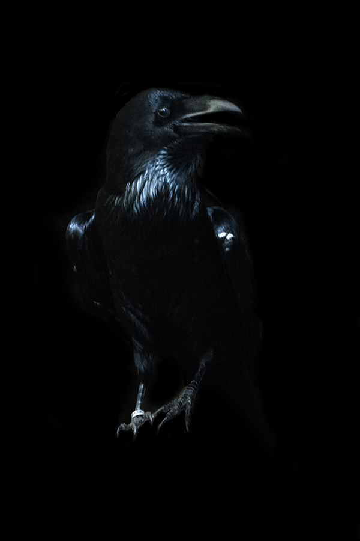
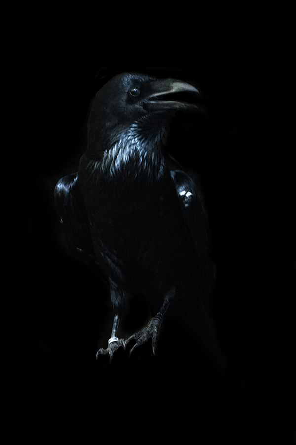
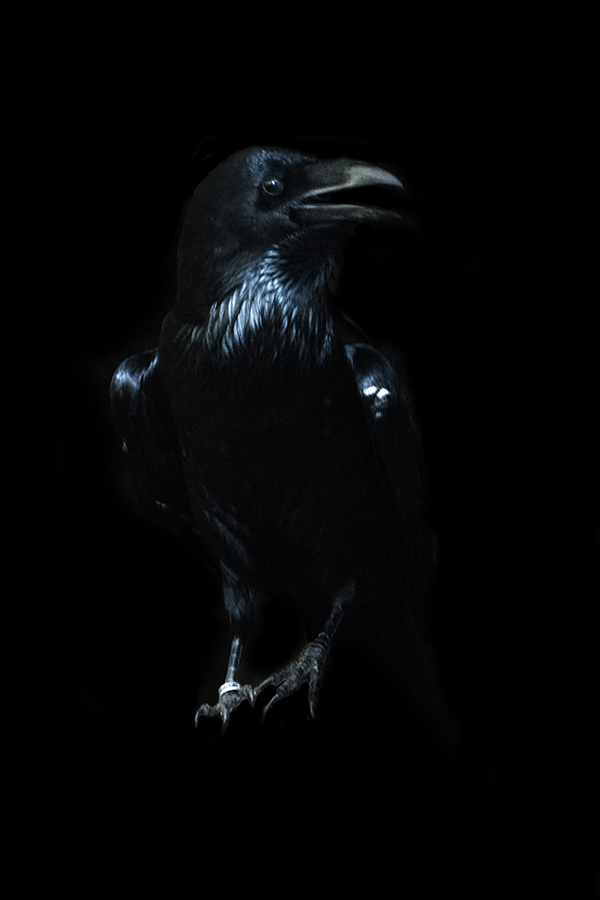
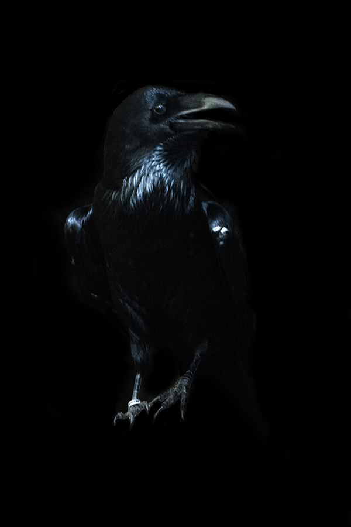

memento mori
Memorial to death
Charlotte van de Zande is a 21 year old dutch photographer. She likes to question philosophical subjects in her work and wants people to think about this typical question.
Charlotte’s project gives you endless possibilities in how the life after dead will look like. For her project Charlotte visit’s a lot of different people and ask them about their view of the afterlife. She interviews them and portrait them. With this information she tries to create an image what visualize how this person thinks about the afterlife.
➝ Portfolio